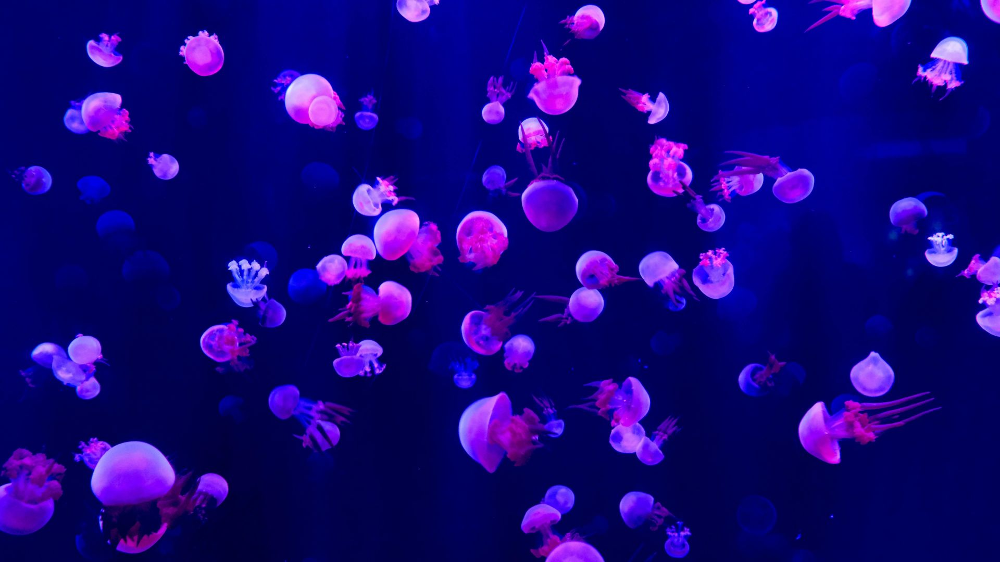

The dumbo octopus is the deepest living octopus, usually found between 3000 and
7000 meters beneath the ocean's surface. There are at least 15 species, all
named after their large fins that resemble the ears of famous Disney character Dumbo the Elephant.
They use these ear-like fins to slowly flap to move, while steering with their arms.
Unlike many other octopus species, the dumbo octopus does not have an inc sac as it does not face the threat
of predators as heavily as its surface counterparts. Instead, they have the ability to
flush the transparent layer of their skin at will to blend in with their dark environment.